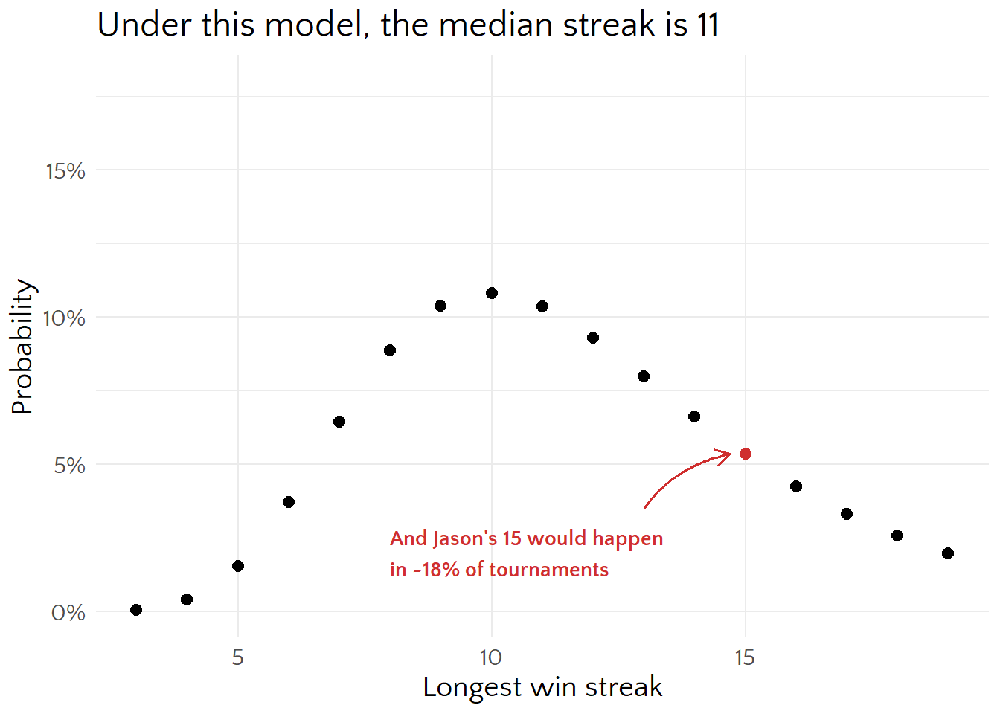
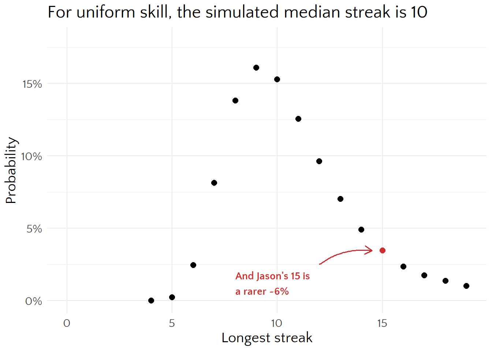
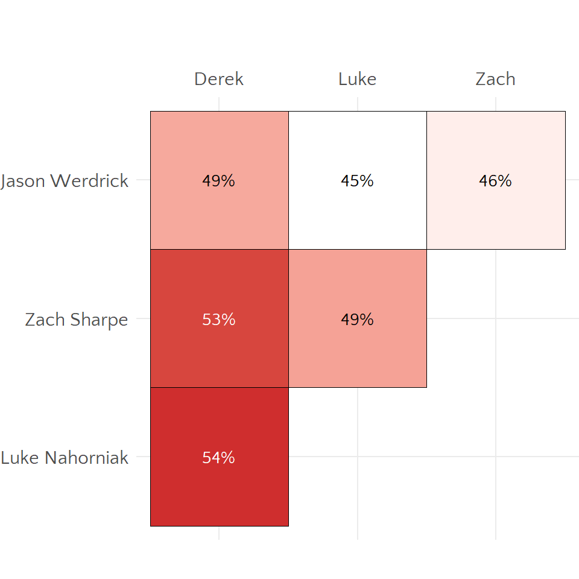
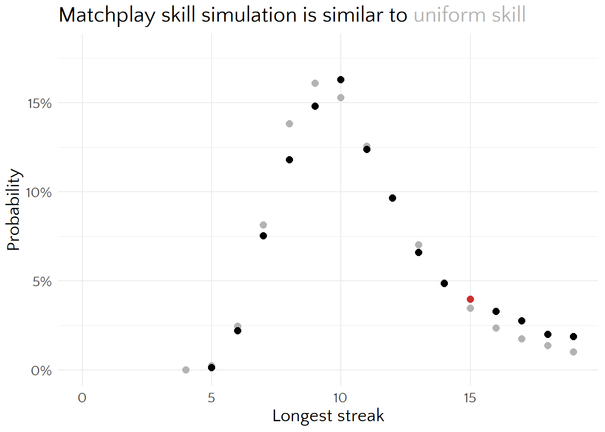
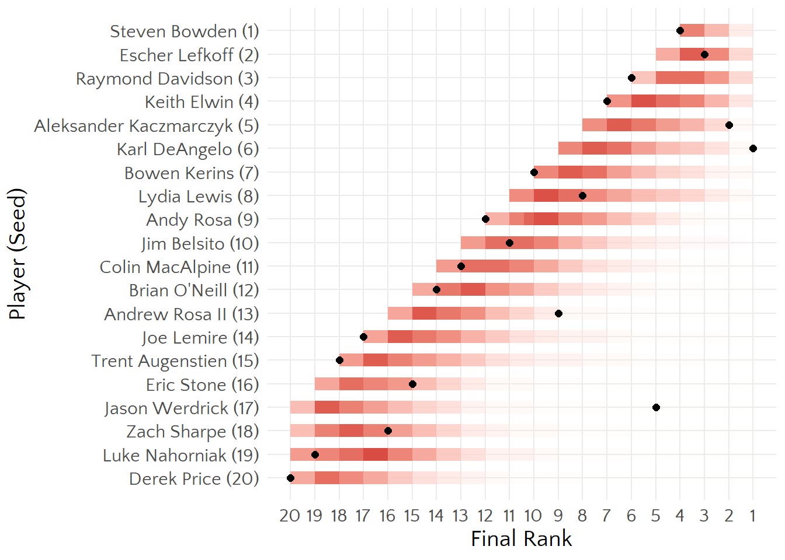
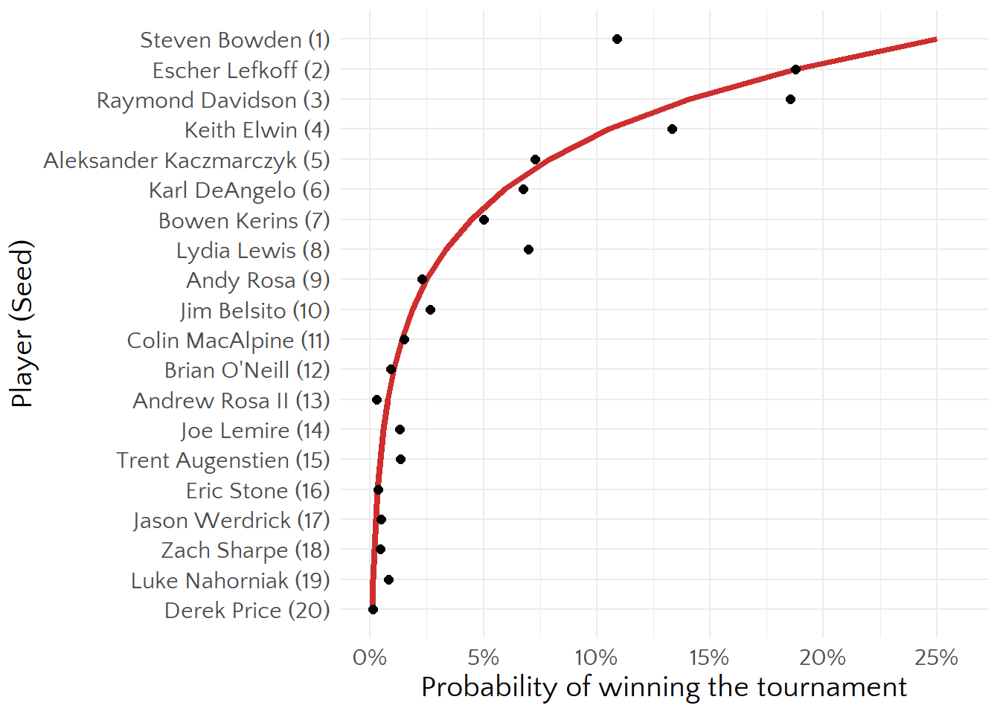

| rank | player | seed | rounds_won | ifpa_rating |
|---|---|---|---|---|
| 1 | Karl DeAngelo | 6 | 8 | 1931 |
| 2 | Aleksander Kaczmarczyk | 5 | 6 | 1932 |
| 3 | Escher Lefkoff | 2 | 2 | 1943 |
| 4 | Steven Bowden | 1 | 0 | 1651 |
| 5 | Jason Werdrick | 17 | 15 | 1680 |
| 6 | Raymond Davidson | 3 | 0 | 1831 |
| 7 | Keith Elwin | 4 | 0 | 2062 |
| 8 | Lydia Lewis | 8 | 3 | 1855 |
| 9 | Andrew Rosa II | 13 | 7 | 1880 |
| 10 | Bowen Kerins | 7 | 0 | 2016 |
| 11 | Jim Belsito | 10 | 2 | 1876 |
| 12 | Andy Rosa | 9 | 0 | 1724 |
| 13 | Colin MacAlpine | 11 | 1 | 1779 |
| 14 | Brian O'Neill | 12 | 1 | 1727 |
| 15 | Eric Stone | 16 | 4 | 2024 |
| 16 | Zach Sharpe | 18 | 4 | 1704 |
| 17 | Joe Lemire | 14 | 0 | 1863 |
| 18 | Trent Augenstien | 15 | 0 | 1646 |
| 19 | Luke Nahorniak | 19 | 1 | 1734 |
| 20 | Derek Price | 20 | 0 | 1689 |
Stern Pro Circuit Final 2020
How great was Jason Werdrick’s run?
The 2020 Stern Pro Circuit final was 20 player ladder tournament, which started with the 4 lowest-seeded players and eliminated the lowest scorer every round to bring in the next lowest remaining seed. Jason Werdrick started in the first round and advanced in an impressive 16 consecutive games before being eliminated in 5th place.
I’m going to say ‘win’ a lot when ‘advance’ would maybe apply better. But just know I mean not-loss in a given round, not winner of the entire tournament.
That seemed like quite a run, but it got me thinking about post-hoc analysis and how unlikely this actually is. Since you only have to be not-last to move on, and maybe my intuition is wrong and someone was likely to have a winning streak that long.
Here’s how the tournament turned out
Negative binomial
Here’s something that doesn’t work.
Assume each player is equally skilled and has the same 1 in 4 chance of not losing in round. The distribution of games won is negative binomial. Then if each player is independent, we can use one of my favorite results about the distribution of order statistics to compute the maximum number of games a player would win in sample of 20 players
Order statistics are ranked observations from a sample. The first order statistic \(X_{(1)}\) is the minimum and the last \(X_{(n)}\) for a sample of size \(n\) is the maximum.
\[ \begin{align} P(X_{(j)} = x) &= P(X_{(j)} \leq x) - P(X_{(j)} \leq x - 1) \\ P(X_{(j)} \leq x) &= \sum_{k=j}^{n} \binom{n}{k} F_X(x)^k (1-F_X(x))^{n-k} \\ \end{align} \]
So \(P(X_{(20)} = x - 1) = F_X(x - 1)^{20} - F_X(x - 2)^{20}\), where \(F_X\) is the cumulative negative binomial distribution and we shift everything down one cause that counts games played and we’re interested in wins. The distribution of the longest win streak looks like

This color is Stern red:#CF2E2E
That model is cute, but there are a bunch of problems with it. Win streaks aren’t distributed as negative binomial, cause the support isn’t right, it takes at least 3 games to win the tournament and it eventually ends, so nobody can win more than 19 games. Players don’t have the same, independent probability of losing the underlying games; it’s skill dependent and most players in a round are also in the next round.
Worse, even if we knew the distribution of the number of wins, we can’t just do the cool order statistics thing. Since players compete against each other, their longest win streaks aren’t independent–every match I lose makes 3 other player’s streaks longer.
That’s intimidating, so I pre-emptively gave up on the math to do a simulation.
Simulated win streaks
Uniform win probability
To start, assume players have the same win probability (which is not unreasonable–these are 20 of the best tournament players in pinball).
# given a set of players and their relative win probs, return the longest streak
sim_ladder <- function(skill_data) {
# initialize results and first active players
seed <- 1:20
round_out <- rep(NA, length(seed))
active <- 20:17
# check for glicko-like names
skill_type <-
if (all(c("r", "rd") %in% names(skill_data))) {
"glicko"
} else {
"raw"
}
# sim tournament
for (round in 1:19) {
# get skills for active players
skill <-
if (skill_type == "glicko") {
skill <- compute_p_lose_all(player_data = skill_data,
player_seeds = active)
} else {
skill <- skill_data[active]
}
# sample loser weighted by skill
loser <- sample(active, 1, prob = skill)
# remove loser
active <- active[active != loser]
# record info
round_out[loser] <- round
# add next active player
if (round < 17) {
active <- c(active, 17 - round)
}
}
# assign winner to phantom last round
round_out[active] <- round + 1
return(round_out)
}
It surprises me that the median win streak is so high. My initial intuition was more like 5, but since each game has 3 ‘winners’ by our definition, I was underestimating the number of ways streaks can exist.
Player skill
What if we don’t assume all players are equal? I would expect the distribution of the longest streak to shift left, because players with longer possible streaks are lower seeds and are more likely to lose.
We can pull Matchplay skill estimates from the day of that tournament (October 19, 2022) for that. My understanding is that these use Glicko, which gives pairwise comparisons, so how do we translate that into win or elimination probability?
One (possibly bad) way is to think of a 4 player match as \(\binom{4}{2} = 6\) head-to-head matches and model those win probabilities, then find the probability of each player losing to every other player. That won’t make a probability distribution over the 4 players because they don’t add to 1, but we can treat them as ‘relative risks’ of losing to everyone and scale them up.
I know there are papers out there about rankings for multiplayer games, but that’s a topic for another day. Perhaps never.
Glicko, quicko
\[ E = \frac{1}{1 + 10^\frac{-g \big( \sqrt{RD_i^2 + RD_j^2} \big) (r_i - r_j)}{400}} \]
where \(g(x) = \frac{1}{\sqrt(1 + (3q^2x^2)/\pi}\) and \(q = \frac{\ln(10)}{400}\)
For Matchplay.events: provisional rating 1500, max rd 125, min rd 15, system constant 3.7775 (Matchplay.events 2026)
For example, consider the first 2020 Stern Pro Circuit Final matchup.
| seed | player | ifpa_rating | matchplay_rating | matchplay_rd |
|---|---|---|---|---|
| 17 | Jason Werdrick | 1680 | 1762 | 25 |
| 18 | Zach Sharpe | 1704 | 1790 | 29 |
| 19 | Luke Nahorniak | 1734 | 1795 | 23 |
| 20 | Derek Price | 1689 | 1769 | 24 |
The resulting pair-wise matchups, in this example Luke Nahorniak is slightly favored over all other players (since this is based on ELO and nothing else, the highest ranked player will always be ranked over all others, no rock-paper-scissors effects).

Then we can compute the probability (assuming independence) of each player losing to every other player (which is a proxy for coming in last), then normalize that to get a probability distribution of coming in last.
Independence is the part that I think hurts this the most, since a bad game in a head-to-head matchup would only cause one loss, but in a 4 player game would be 3 head-to-head losses.
| p1 | p_lose_all | normalized |
|---|---|---|
| Derek Price | 14% | 28% |
| Jason Werdrick | 15% | 30% |
| Luke Nahorniak | 10% | 21% |
| Zach Sharpe | 11% | 22% |
Apply to Monte Carlo

It’s…similar enough to uniform. Longer streaks are slightly more likely, the opposite of what I expected. Maybe lower seeds were under-seeded relative to their Matchplay rankings.
Jason’s 15 win streak is still somewhat surprising, but not eye-popping. Under this model, about 15% of the time someone was going to have a streak at least that long in this ladder format.
Simulated tournament
We’re basically simulating the whole tournament, so let’s look at individual player results to see if it’s doing something reasonable. Bars here are 5% quantiles of rank from the simulation and dots are the observed ranks.

I don’t have much to say about this besides that looking at the marginals for each seed could be misleading cause long streaks necessarily mean other players have shorter ones. We could look at ‘rounds played’ instead and at least they’d all start at the same point but I think that would mostly just left-align this graph.
Perhaps more interestingly, here’s the simulated probability of winning the entire tournament for each player. The red line is the ‘uniform skill’ win probability (which comes from the tournament structure, since the player with seed \(i\) has to play \(i\) 4-player games, one 3-player game, and one 2-player game to win it all).

The differences from that line are differences from equal Elo, magnified by the rank. Steve Bowden is a great player, but he’s far below the line here because his win probability is far from zero and most of the time he’d have to beat Escher (who has 4 career major championships), Ray (3 majors), or Keith (11 majors) to win the tournament.
Note that Elo isn’t skill, kind of like how IQ isn’t intelligence. It’s a model parameter constructed to hopefully be high when our operational definition of skill (beating players especially those who tend to beat other players) is also high.
This does make me want to learn more about IFPA’s ranking system, how it handles multiplayer matches, and what fundamentally multiplayer ELO models are like.
The other thing I’d like to think about more is the effect of being ‘cold’, since some players were sitting around for a while before getting in. They may have been warming up on other games, and there are probably better sources of data for this (like tournaments with lots of byes).
References
Matchplay.events. 2026. “Match Play Ratings.” 2026. https://docs.matchplay.events/data-crunching/match-play-ratings.
Stern Pinball. 2023. “2020 Stern Pro Circuit Championship Game 1.” https://www.youtube.com/watch?v=pIqx6ZF6K9Q&list=PL6U8vZQpW5rxAQdLoSmNI5JOMOTbFj0kA&index=10.